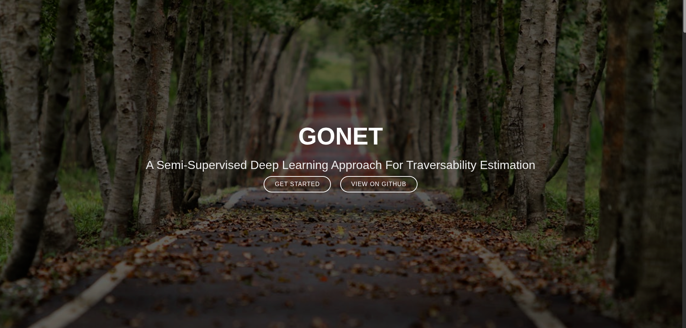

Traversability Estimation
with Go-Net
While standard RGB cameras handle object detection, semantic segmentation, and localization, autonomous warehouse navigation requires a physical understanding of the environment: deciding instantly if the zone directly in front is traversable or non-traversable. This project adapts the semi-supervised Go-Net architecture across severe camera modality gaps via custom data engineering.
the problem: adding a physical brain to perception
Standard computer vision models excel at recognizing predefined classes (e.g., bounding boxes for pallets, shelves, or workers). However, mobile warehouse robots face dynamic, unstructured floor conditions: temporary clutter, uneven surfaces, transitions between concrete and grating, or unexpected spills that do not fit neatly into standard object detection ontologies.
Our existing onboard RGB camera pipeline performed robust localization and semantic segmentation, but lacked the "physical brain" to reason about immediate floor traversability. Without real-time traversability classification of the direct forward corridor, path planning algorithms must rely on conservative assumptions that often stall the robot in safe, open zones.
the approach: adapting stanford's go-net
To solve this without manually annotating thousands of dense pixel-wise warehouse segmentation masks, we selected Go-Net (Stanford CVGL), a semi-supervised deep learning model explicitly designed for robust traversability estimation from visual inputs.
This project is primarily an intensive Data Engineering and Model Training initiative. I took the foundational architecture described in the original Go-Net research paper and built an end-to-end training and curation pipeline to retrain and specialize the model for indoor warehouse environments.

Figure 1 · Go-Net framework formulation: utilizing semi-supervised learning to classify navigable terrain corridors from monocular visual inputs.the modality hurdle: fisheye vs. pinhole cameras
The single biggest technical hurdle encountered during model transfer is a severe modality mismatch. The massive pre-training datasets leveraged in the original Go-Net literature were captured using ultra-wide fisheye cameras with strong radial distortion and unique pixel density distributions across the lower field-of-view.
Original Domain: Fisheye Modality
Non-linear radial distortion curves where peripheral ground zones are compressed into curved pixel coordinates. Training directly on this dataset biases spatial attention filters toward spherical optical geometry.
Target Domain: Pinhole RGB Camera
Our warehouse mobile robot uses standard rectilinear pinhole lenses. When raw fisheye weights or uncorrected datasets are evaluated on rectilinear inputs, the depth-to-pixel relationship breaks, causing false non-traversable alarms directly ahead of the wheels.
Because collecting a brand-new, million-frame warehouse dataset from scratch is impractical, the challenge lies in leveraging the massive existing fisheye dataset while forcing the network to generalize accurately to rectilinear pinhole cameras.
cross-modal data engineering & exaug-nav
To make the model generalizable across both camera modalities, I am building a custom data engineering pipeline that applies geometric domain adaptation and perspective warping:
We are implementing techniques inspired by ExAug-Nav (Experience-driven Augmentation for Navigation). By computing camera intrinsic transformations, we synthetically warp rectilinear warehouse crops into pseudo-fisheye projections and vice-versa during training. Furthermore, ExAug-Nav style experience augmentation injects synthetic obstacle textures, lighting shifts, and viewpoint perturbations into traversable ground zones, forcing the feature extractor to rely on semantic floor structure rather than optical lens artifacts.
live inference demonstration
Once cross-modal training converges, the resulting model runs in real-time on our robot's edge GPU, overlaying binary traversability probability masks directly onto live RGB camera streams at high framerates:
 Figure 2 · Live inference demonstration: Go-Net real-time traversability segmentation mask overlaying safe corridor paths directly on the live warehouse RGB camera stream.
Figure 2 · Live inference demonstration: Go-Net real-time traversability segmentation mask overlaying safe corridor paths directly on the live warehouse RGB camera stream.